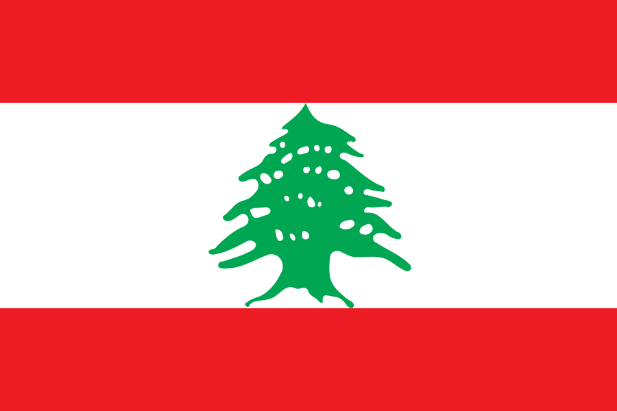

Maltese Language Section
Original Articles
-
 /
/  Grammar and Writing Script Article details the Maltese Writing Script (Alphabet), and Grammar, including verb conjugations, definite article (the), pronouns and more. Written by Zach, and edited by Julian.
Grammar and Writing Script Article details the Maltese Writing Script (Alphabet), and Grammar, including verb conjugations, definite article (the), pronouns and more. Written by Zach, and edited by Julian. - Maltese to English Dictionary + Tutorial This article, details a Maltese to English dictionary, with an added tutorial on how to view and install it. It also contains resources at the end, to help you edit the provided dictionary, or make your own dictionary. Written by Julian
Maltese Language Schools / Language Teachers
- Australia:
- Maltese Language School NSW Division of the Maltese Community Council of NSW. Hosts online classes via ZOOM, and in person at Horsley Park NSW.
- Maltese Language Classes VIC Sponsored by the Maltese Community Council of Victoria. Hosts online classes via ZOOM, $120 per semester for 16 lessons.
- Victorian School of Languages Victorian, government school, that offers Maltese language classes, for students in Years 1 to 12
- Rose-Mary Curmi - Skype Maltese Beginners Courses Maltese language teacher, based in QLD Australia. Conducts online lessons via Skype. Can be contacted via Facebook, or email: friends4eva@live.com.au
- Malta:
- Malta University Language School Offers online 'Maltese for Beginners' language course. €250 per module and includes tuition, course material for each session and an end of course certificate.
Web Resources
- spelling.mt An open source, Maltese spell checker.
- / Ġabra An open lexicon for Maltese. Very useful for finding verb conjugations. If confused about the abbreviations used on the website (e.g. p1, perf, sg), Zach has written a guide.
- Verb.mt A list of Maltese verb conjugations. An alternative to Ġabra
- / Memrise - Maltese Courses Website that had free courses, on learning the Maltese language. Teaches Maltese to the user, through a combination of multiple choice quizzes, and spelling quizzes. Gradually leads the user through multiple different words and phrases. Very useful resource for learning Maltese vocabulary
- / 1000 Most Common Maltese Words Title says it all. Very useful for vocabulary building.
- / Common words for Maltese and Italian. Website that finds the common words prevalent in Maltese and Italian. Works for other languages too, such as French and Spanish. Sadly, there is not much for Arabic.
- / Teach Yourself Maltese A book by Joseph Aquilina, providing a comprehensive beginner's guide on Maltese grammar.
- / Diziunariu mill Malti ghall Inglis Maltese to English dictionary.
- / Maltese Morphology Article which talks about Maltese morphology - study of words and how they're formed.
- / SimplyTranslate Lightweight, privacy respecting front end for Google Translate. Has a Maltese language option.
- SLS Books Languages bookstore, based in Sydney Australia, selling Maltese language books.
- Maltese Television:
- TVM - Television Malta Television station, owned by the Maltese government. Has a variety of Live TV channels, TV shows, and radio stations, that you can watch/listen to.
- Avarù Children's program, with subtitles. Episodes are very short - 5 minutes each.
- One Television station, owned by the Malta Labour Party
- NET Television station, owned by the Nationalist Party
- SBS bil Malti SBS news podcast in the Maltese language.
- Maltese Voices Weekly Maltese radio program, hosted on Australian, NSW based radio station: 89.3FM.
- TheHuSkY1984 A YouTube channel, with 6 videos series on the Maltese language.
- / Tomasz Andrzej Nidecki A YouTube channel, with video series on the Maltese language. 'Bits of Maltese,' and 'Maltese for Foreigners.'
- Żiżi Malti Programme for preschoolers, teaching the Maltese language.
- Għidha bil-Malti - Say it in Maltese Website containing a series of bite-size infographics, to teach the Maltese language. HIGHLY RECOMMENDED!
- Kelma Kelma Website dedicated to exposing the beauty of the Maltese language. Gathers together interesting aspects of the language: word of the day, proverbs, idioms etc.
- Il-Miklem Website collating Maltese words, proverbs, and cultural information.
- / Maltese boy Tumblr Blog with Maltese language materials.
- Teleskola Educational website, with recorded lessons and materials on the Maltese language.
- Teaching Maltese in Church Schools Educational website, primarily for School students, with Maltese language materials - Poems, Prose writing, Videos.
- / /
 Charles Daniel Saliba Maltese author who wrote an array of books, on the Maltese language. Wrote the 'Maltese for foreigners' series of books.
Charles Daniel Saliba Maltese author who wrote an array of books, on the Maltese language. Wrote the 'Maltese for foreigners' series of books. - Ismijiet Maltin - Maltese Names A list of first names, written in the Maltese language.
- Phoenicians of Malta and their language Article discussing the Maltese language, and its Punic influences.
- / /  Phoenician Language Site Interesting website, that talks about the Phoenician links in the Maltese and Lebanese languages.